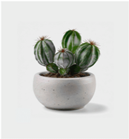

 Within this web platform, users gain access to dynamic sensor data that captures the intricate environmental conditions surrounding cacti. It delivers real-time metrics on vital parameters such as light intensity, soil moisture levels, and temperature fluctuations. Understanding these factors is imperative for cultivating thriving cacti, allowing enthusiasts and growers to make informed decisions and tailor care strategies to the specific needs of these resilient plants. The live data empowers users to create optimal growing environments, fostering healthier and more vibrant cactus ecosystems.